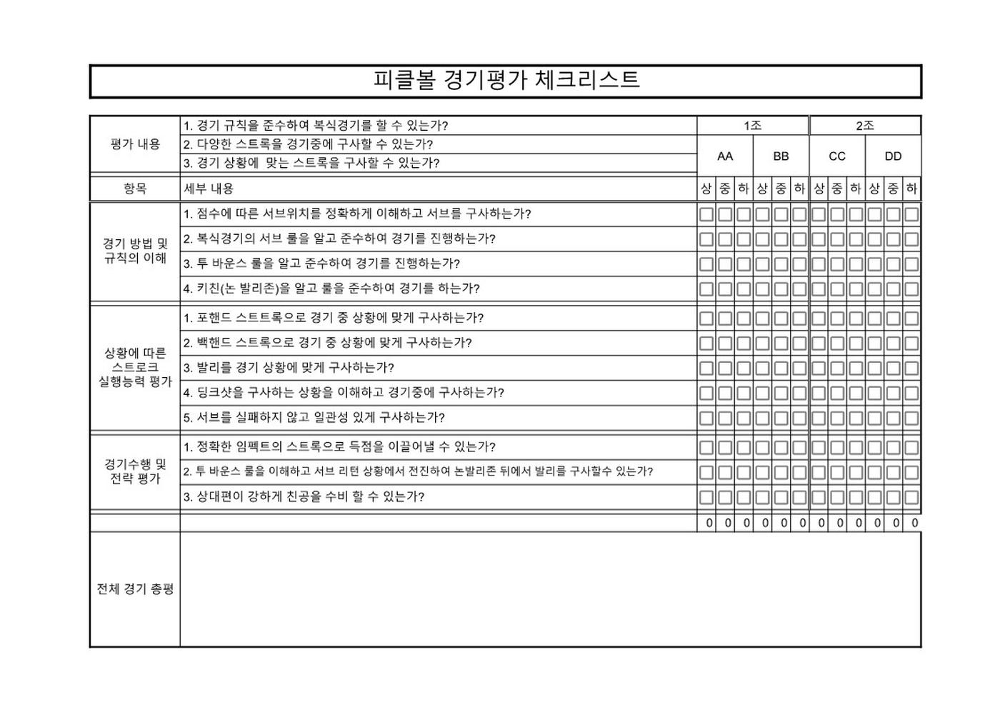

피클볼 평가
위 모션그래픽의 내용을 읽기용으로 정리했습니다. 2026학년도 1학기 피클볼 평가 계획을 바탕으로 했고, 뒷부분은 답이 아니라 함께 고민해 보고 싶은 질문입니다.
2022평가 계획 한눈에
| 평가 요소 | 배점 | 차시 | 무엇을 보는가 |
|---|---|---|---|
| 서브 | 20 | 8 | 이븐·오드 코트의 서비스 코트로 언더핸드 서브를 정확하게 보내는가 |
| 리턴 앤 발리 | 30 | 13 | 투바운스 규칙을 이해하고 길게 리턴한 뒤 네트로 붙는가 |
| 경기 | 40 | 14–16 | 경기가 되는가 (경기가 어려운 친구와 같은 조는 교사와 랠리로 평가) |
| 서술형 | 10 | 17 | 규칙과 전술을 자기 말로 설명하는가 |
20222024에서 2026으로
2024년 경기평가는 기술 체크리스트였습니다. 한 학생당 12항목을 상·중·하로 판정했고, 한 반 31명이면 372번, 45분 수업이면 7초에 한 번씩 판정해야 했습니다.

2026년에는 경기 만점 기준에서 백핸드, 딩크샷 같은 기술 이름을 지우고, 경기가 되는가를 봅니다. 경기가 되면 만점입니다. DUPR 2.5~3 정도면 누구와도 경기를 즐길 수 있다고 보았습니다. 경기가 어려운 친구와 같은 조가 되면, 그 조는 모두 교사가 직접 상대가 되어 서브, 딩크, 베이스라인 랠리로 평가했습니다.
2022향상한다
[9체02-17]은 “네트형 스포츠의 수행 원리를 적용하여 경기 기능을 수행하고 향상한다.”입니다. 이 가운데 ‘향상한다’를 평가할 방법은 찾지 못했습니다. 그래서 해 보고 싶어졌습니다.
IB피클볼 경기를 IB에서도 할 수 있지 않을까요?
IB MYP 체육은 네 가지 기준으로 평가한다고 합니다. 피클볼 수업에 대 보면 이런 질문이 생깁니다.
- A 지식과 이해. 서술형으로 규칙과 전술을 설명해 볼 수 있지 않을까?
- B 수행 계획. 무언가를 직접 만들어 보면서 규칙을 이해할 수 있지 않을까?
- C 적용과 수행. 서브, 리턴 앤 발리, 경기. 이미 평가하고 있는 것들입니다.
- D 성찰과 개선. 경기가 끝난 뒤 전술·전략 카드로 무엇이 됐고 무엇을 바꿔 볼지 적고, 다음 경기에서 확인해 볼 수 있지 않을까?
2022 개정 교육과정 중학교 체육과 성취기준 [9체02-16]~[9체02-18]과 2026학년도 1학기 피클볼 평가 계획(서브 20 · 리턴 앤 발리 30 · 경기 40 · 서술형 10)을 바탕으로 했습니다. A–D는 IB MYP 체육과 건강교육의 네 가지 평가 기준 이름입니다.